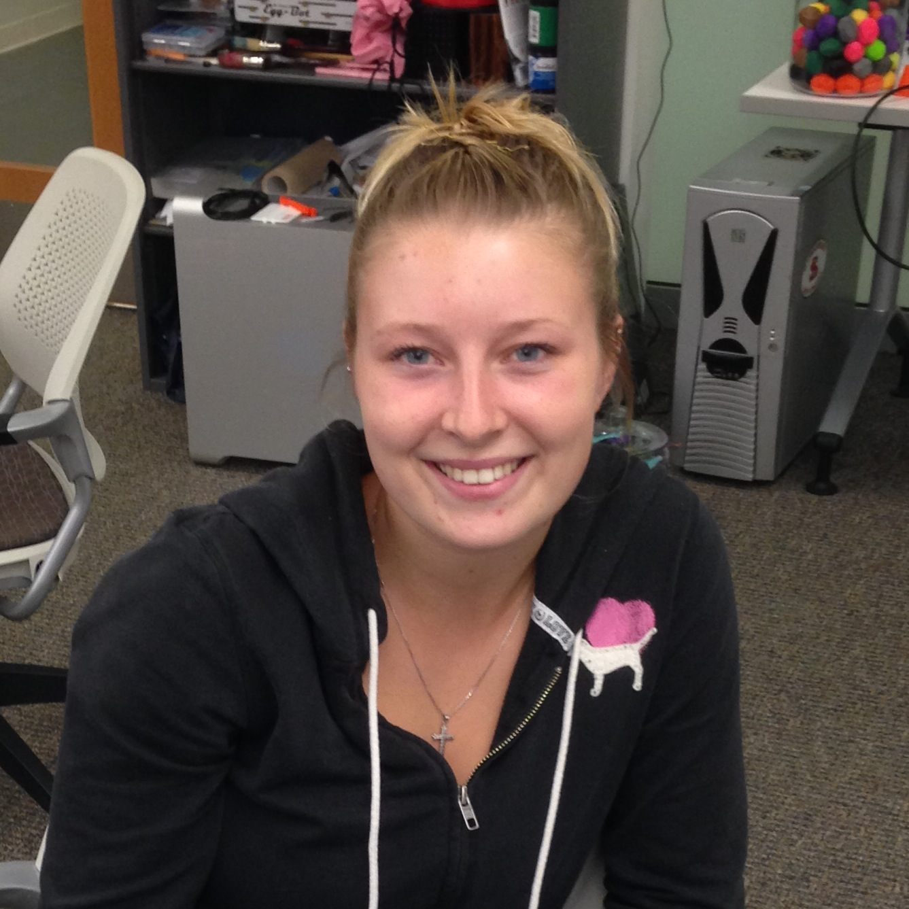
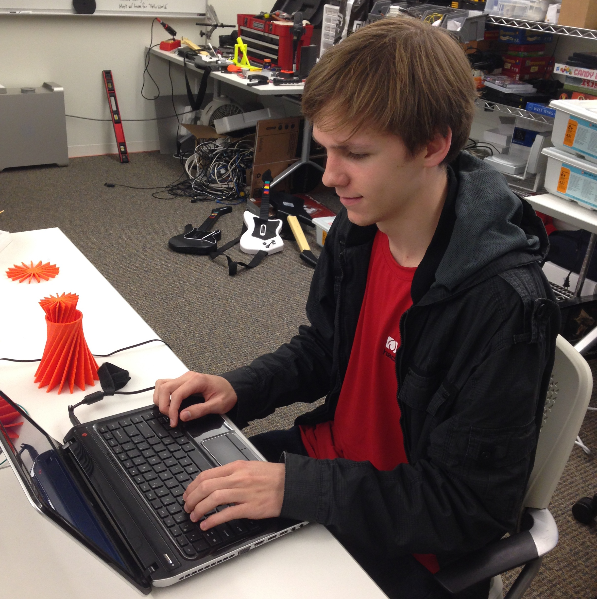
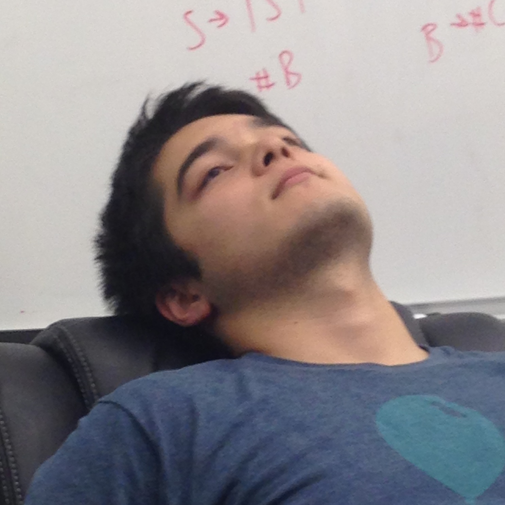

As a junior at Wheaton College in Norton, MA, Aimee is a Computer Science major. She has taken several courses throughout her time at Wheaton learning Python, C++ and html. She was inspired to become part of this male dominated field by her mother who is a Computer Scientist. One day Aimee hopes to make a difference by becoming involved in Cyber Crime and preventing corporate and national espionage.
Robert is a junior at Wheaton College (Norton, Ma) currently focusing on a Bachelors degree in Computer Science. He has develop a strong interest in the field and has begun working on various projects. Even though he is still very new to programming, he is currently striding to pick up new languages, and new projects that add to the learning curve. Programming has helped him view problems in a totally different way, identifying the problem and coming up with various solutions, and learning to elect the most effective to the given problem.
Bryan is a sophomore at Wheaton College (Norton, MA) studying Computer Science and Mathematics. He first became interested in computer science when offered a summer camp hosted at a local community college, but did not truly dive into the subject until his first semester of college. Now in the middle of his third semester, he has touched on a wide variety of fields of computer science, centered mainly around web development, including work using different back-ends such as PHP, Python (with Flask) and Node.js.
Clayton is currently a CS student at Wheaton College. He has contributed to many projects such as the iPhone app, cowDuck. He also creates music on the side releasing mixes and bootlegs under the alias MarkDown.
He loves facts about life including but not limited to:
To burn off 1 M&M you need to walk the length of a football field (good thing you can't find the fabled Wheaton M&Ms anywhere anyways...)
If we put a giant mirror 10 light years away from Earth and looked at it through a telescope, theoretically we'd see 20 years into the past.